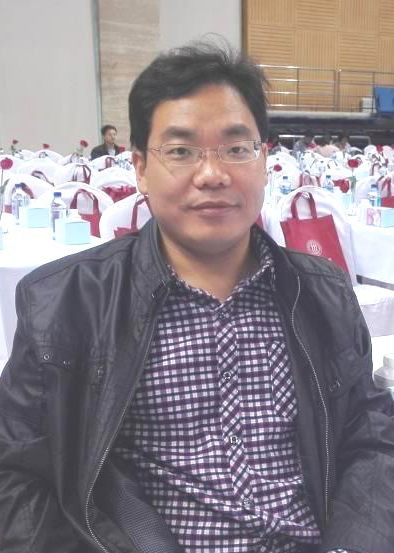
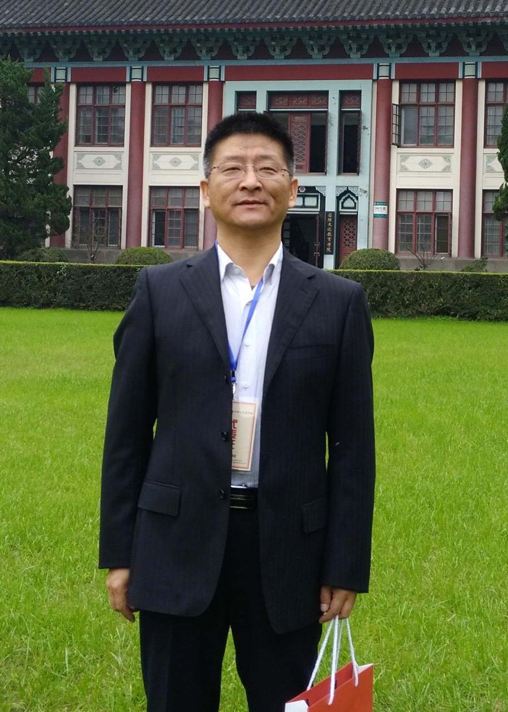
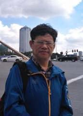
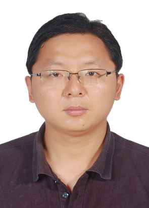
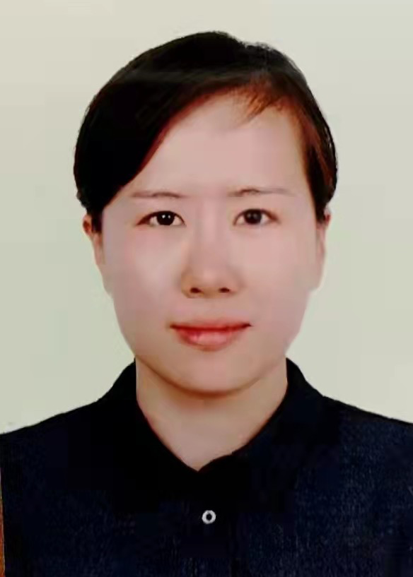
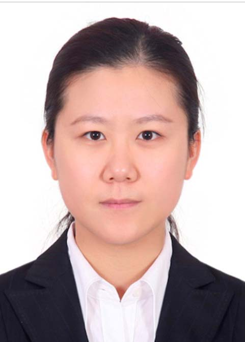
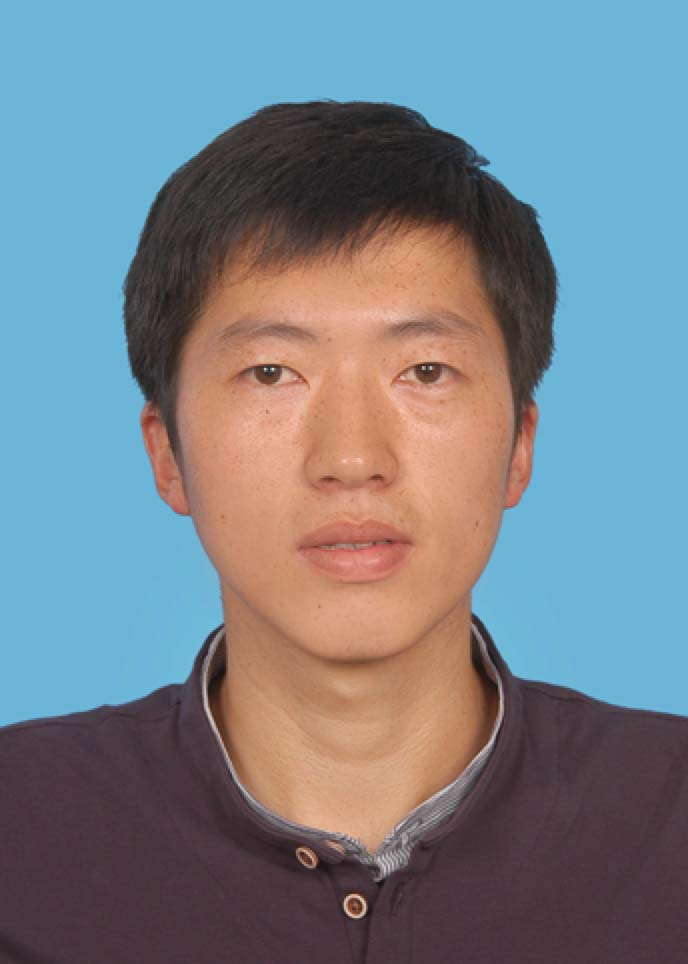
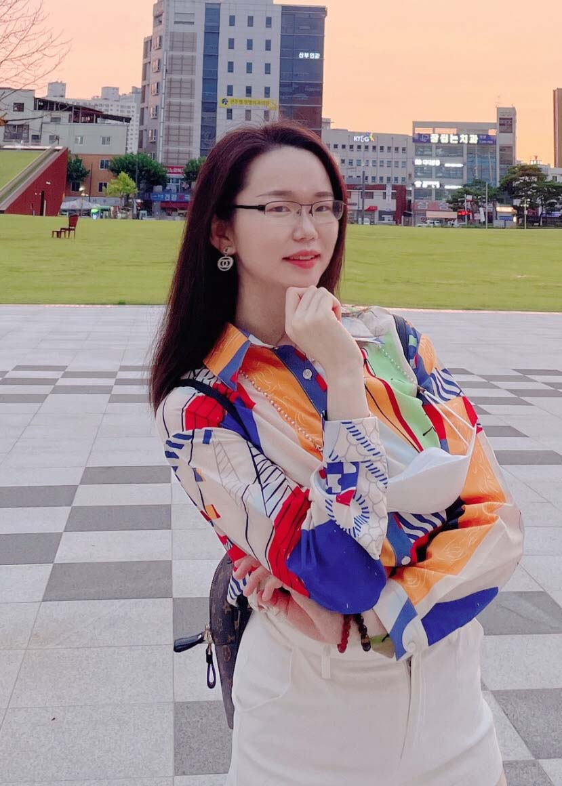
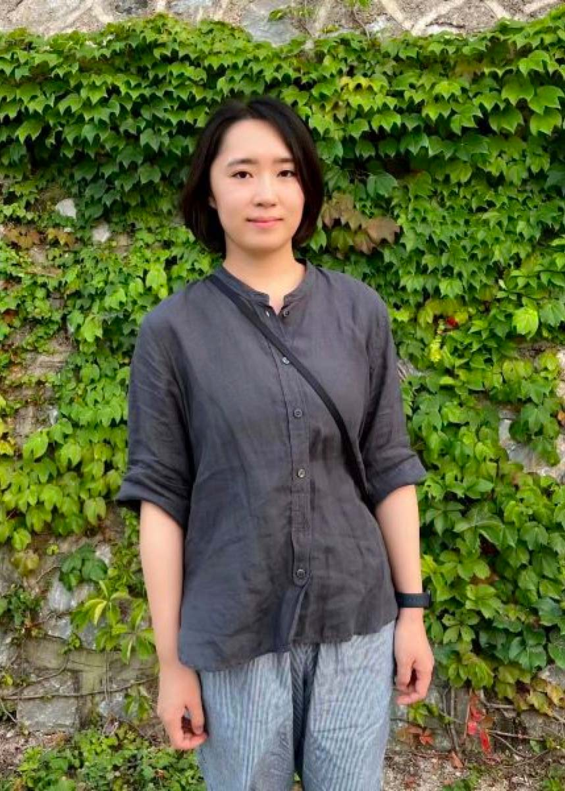

郑青华 ZHENG QINGHUA
“烟台大学新闻学专业已经进入到第二十个年头，也正处于发展的关键期。随后的五年，我希望新闻学专业综合实力至少可以排进省内前三，希望培养的每一位学生都能够拥有新闻理想和职业激情，既具有硬核的技术能力，又具有深邃的思想与饱满的学习热情，也希望走出校门的每一位毕业生都能披荆斩棘，砥砺前行，不负韶华，成长为对党和国家，对社会，对人民有用的栋梁之材。”
李日 LI RI
“回首过去，硕果累累。展望未来，我们信心满怀。烟大新闻人将永远抱持“行先天下，思想为锋”的系训，以更加昂扬的姿态，更加饱满的热情，更加扎实的教风、学风和作风，持续巩固一流学科建设成果。初心不改，笃行不怠，接续打造中国新闻高等教育的胶东码头，擦亮中国新闻人才培养的烟大品牌。”
谭诚训 TAN CHENGXUN
“从招收本科生，到招收研究生，再到入选省级一流本科专业，我们新闻系在过去二十年时间里，一步一个台阶，实现了跨越式发展。相信我们新闻系一定能保持和强化这样一种发展态势，开创出更加辉煌灿烂的未来！”
董进 DONG JIN
“未来的新闻系在筚路蓝缕的基础上继续壮大成长，继续培养输送更多优秀的学生，他们从三元湖走向社会，从新闻学专业走向各自的工作岗位和人生目标，成为具备综合文科素质和担负社会责任的人才。”
丁大尉 DING DAWEI
“薪火相传，风华正茂。历经二十年风雨，烟台大学新闻系始终坚持“无理想，不新闻”的内涵引领，不断提升学术创新与社会服务，培育着一代代年轻有朝气的新传力量。在万物皆媒的时代，面对新的历史使命和时代需求，烟大新闻系将迎来新闻传播学发展的新路程和新理念。学院将推进多元立体的学科交叉体系建设，推进先进的互联网技术与教学深度相融合，努力培养具备跨领域、复合型、创新性的新型新闻传播人才，树立强烈的职业精神和社会理想，以传承优秀历史文化与开拓新时代信息变革相结合，不断反思差距，勇担重任，为师生提供更先进的教学战略与更优质的学习资源。不忘初心、牢记使命、业务精湛、作风优良，力争为我国文化事业和文化产业的繁荣与发展做出新贡献！祝我校新闻系二十周年系列纪念活动圆满成功!”
何振波 HE ZHENBO
“近几年不断有新老师加入，给新闻系注入了新的活力。我相信，在新闻系，同学们能树立更专业的新闻理念，学习最新的传媒技术，学会更理性地判断和独立思考。无论社会如何发展，探究真相，理性发声，新闻系培养优秀的时代船头的瞭望者！”
宋晓楠 SONG XIAONAN
“2002至今，‘却顾所来径，苍苍横翠微’，我们见证着也发展着新闻系，烟台大学新闻系二十载生日快乐。祝福我们的老师，同学都有更美好的明天。”
唐念念 TANG NIANNIAN
“新闻系的未来应当是每一个带着满满的收获从这里出发踏上人生新征程的同学。未来的新闻传媒行业必定是日新月异、极速变化的，身处这样机遇与挑战并存的时代，新闻系一定会坚守初心，笃定前行，创新发展，为同学们提供最有力的支持，让越来越多的同学能够从这里走向更大的世界，站上更好的舞台。最后祝各位同学们大胆进取，奋力拼搏，实现自我的人生价值！”
李晶 LI JING
“老师是一个良心职业，身兼知识引领者与一部分父母的职责，因此，我希望新闻系的学生能做到几点，第一，身体要健康，并且尽量心情好。第二，尽量好好学习，好好工作。第三，如果做不到第二点，请保持对某个学科方向或者兴趣方向的爱好，长久坚持下去。这些都不容易，学习、考研、生活的压力让人头秃，兴趣与爱好往往被挤兑到生命最不重要的角落，渐渐蒙上灰尘。因此，我给大家几点小建议，帮助大家过的更好一些，第一是要“合作”，内卷的时代，个人的价值是有限的。第二是要有好奇心。新闻系的学生与哲学系学生都要有这个好奇心，要如同婴孩一样保持对知识的好奇，生命的好奇，生活价值的好奇。乔布斯先生有一句话说的很好，‘Stay hungry Stay foolish’——求知若饥，虚心若愚，跟大家分享。”
肖辛育 XIAO XINYU
“求实、创新、团结、奋进、不忘初心、砥砺前行、追求卓越、争创一流，烟台大学文学与新闻传播学院新闻系明天更美好！”
王瀚 WANG HAN
“希望我们系培养的学生平实而正直，并能找到自己的‘天职’，去承担‘眼下的要求’！”
张一真 ZHANG YIZHEN
“不去耕耘，不去播种，再肥的沃土也长不出庄稼，不去奋斗，不去创造，再美的青春也结不出硕果。希望新闻系的你们踔厉奋发，勇毅前行，希望我们的新闻系百尺竿头，更进一步！”
赵楠 ZHAO NAN
“二十，春风化雨；二十，初心满怀。忆往昔，烟台大学新闻系桃李芬芳，硕果累累，风雨兼程培育众多莘莘学子。看今朝，烟台大学新闻系踏实奋进，砥砺前行，继往开来承起未来重任。盼未来，烟台大学新闻系云程发轫，万里可期，二十如炬，点燃青春正年华！”
张舒 ZHANG SHU
“非常幸运刚入职就迎来了烟台大学新闻系建系20周年，我将在前辈们建立的良好基础上继续努力，为新闻系的明天贡献自己的力量。坚守初心，以梦为马，愿每一位烟大新闻人都梦有所成。愿烟大新闻系越来越好！”
咸玉柱 XIAN YUZHU
“二十年春华秋实，烟台大学新闻系几经沧桑，奋发图强，赢得桃李满园，培养了数千计的新闻人才。回顾过去，我们无比自豪，展望未来，我们信心十足。相信，烟大新闻系必将在未来教书育人、科研探索、专业实践方面不断开拓创新、再创辉煌，成为引领新闻教育的‘胶东旗帜’。”